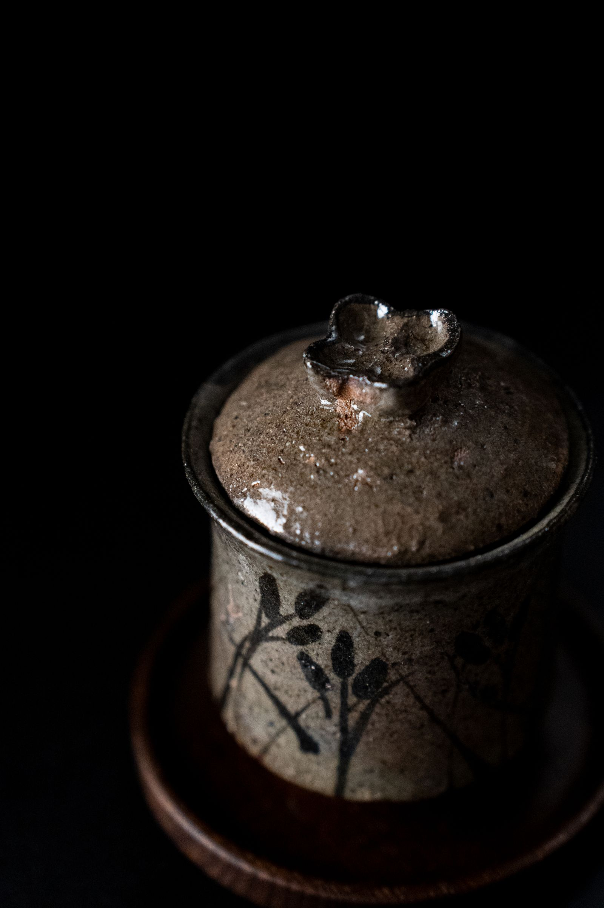
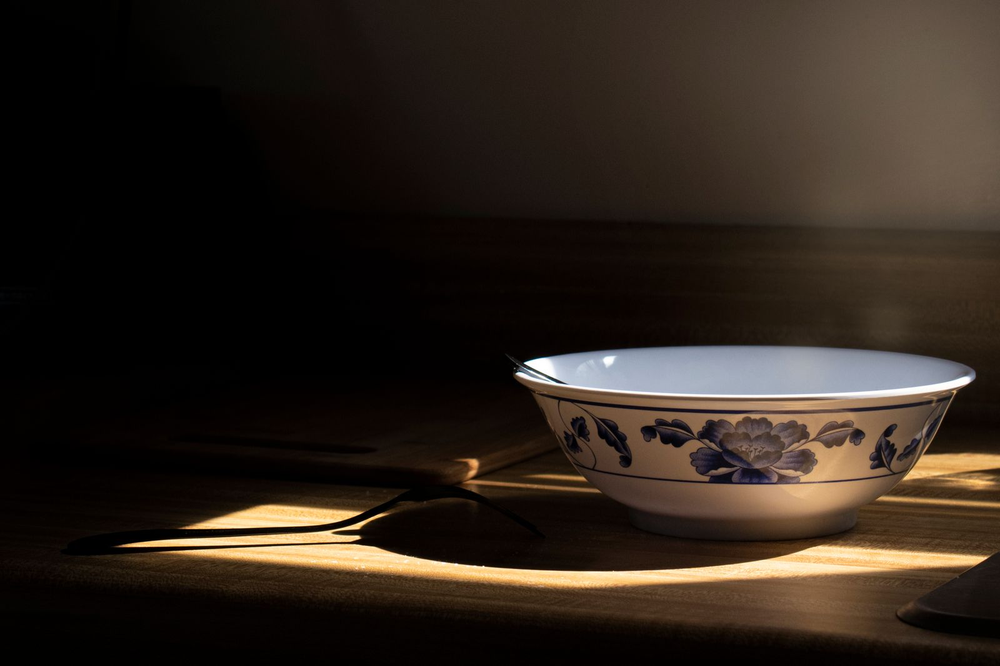
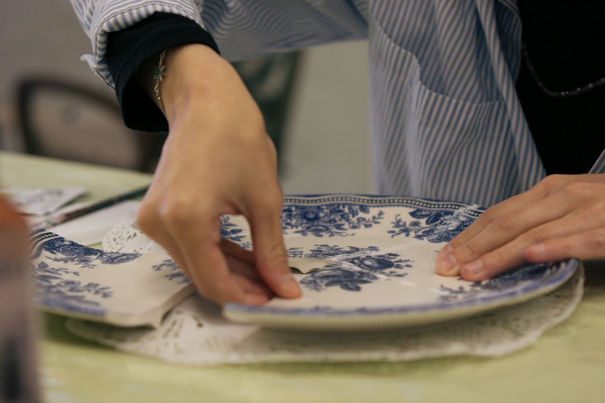
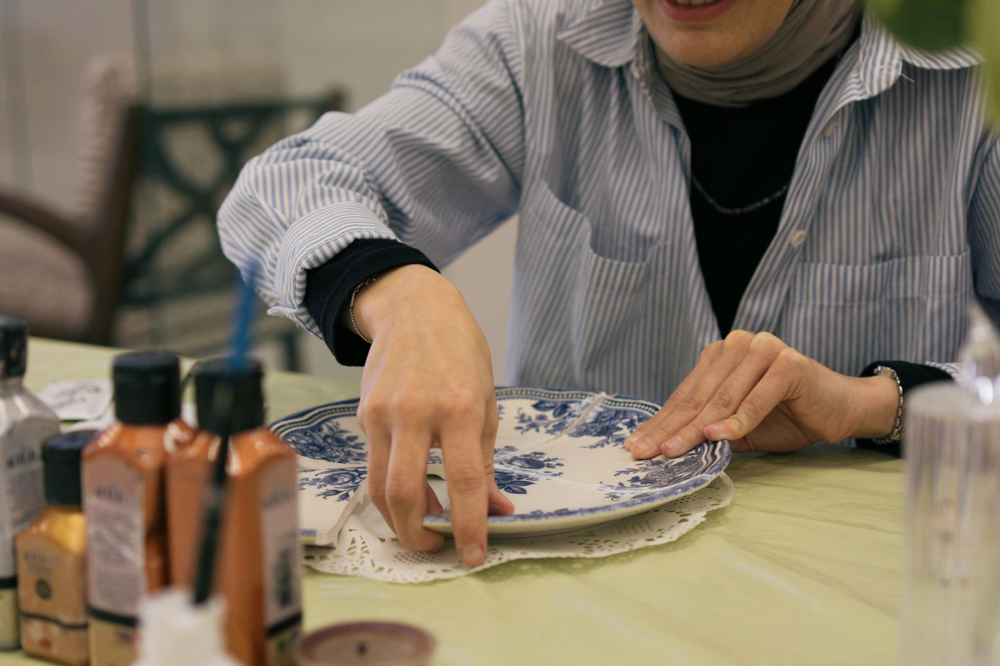

Kyoto · repairs by post worldwide
A broken vessel still has a life ahead of it
Kintsugi Glow is the studio of Hina Mori, a Kyoto-trained kintsugi artist. Send a broken tea bowl, a vase, a family plate set — it comes back joined in urushi lacquer, its seams dusted with real gold, and it goes back to work.

The intake shelf, and the table after
Every commission arrives as shards and leaves as a working vessel. Drag the slider to compare the two states each piece passes through.


As it arrived Back in useLeft: a stoneware bowl photographed on the day it arrived, its wall broken away. Right: a repaired bowl back on the table in morning light. Two photographs, two real states of the bench's work.
Five stages, and the lacquer sets the pace
Kintsugi is repair in tree sap and gold. Urushi — the lacquer of the Japanese lacquer tree — hardens by absorbing moisture from the air, which is why a proper repair is measured in weeks. There is no fast version of this that is still this.
-
01
Joining麦漆 · mugi-urushi
Raw urushi is kneaded with wheat flour into a stiff paste — the adhesive of this craft for five centuries. Shards are coated, pressed together in order, and bound until the bond takes hold.
-
02
Curing in the muro室 · muro
Urushi does not dry; it cures. Joined pieces rest in a warm cabinet held near 75% humidity, sometimes for days between stages. This waiting is most of the calendar in any repair that comes to the bench.
-
03
Filling錆漆 · sabi-urushi
Gaps, chips and small missing corners are rebuilt with urushi mixed with tonoko, a fine polishing-stone powder. The fill goes on in thin layers, cures, and is cut back until the surface runs true under a fingertip.
-
04
Sanding & polishing研ぎ · togi
Seams are levelled with whetstones and magnolia charcoal, then sealed with black roiro-urushi and polished. What remains is a dark, smooth line — the drawing that the gold will follow.
-
05
Gold dusting蒔絵 · maki-e finish
While the final coat is still tacky, gold powder is sifted along the seam and burnished. Keshi-fun, the finest powder, gives a soft matte line; maru-fun, with rounder grains, throws a brighter one. The grade is chosen with you at assessment.

Work in progress, photographed as it happens
Select any photograph to view it larger.
Send the pieces. Get a fixed quote first
No repair begins on an estimate. You approve a written assessment and a fixed price before a single shard is coated.
- Send photographs. Daylight, every shard in the frame, a coin beside the piece for scale. Use the enquiry form or email.
- Assessment & fixed quote. Within two working days: what can be joined, what must be rebuilt, which gold grade suits the piece, and the fixed price. No work starts without your yes.
- The bench. Your piece joins the queue. Most of its weeks are spent curing in the muro; you receive a photograph at the filling stage.
- Return. Fully cured, wrapped in cotton inside a paulownia box, shipped insured, with care notes for the repaired seams.
Typical turnaround is 6–10 weeks from acceptance. Urushi sets the pace, and the studio does not offer a rush service — a hurried cure is a weak seam.

| The break | Piece size | Guide price |
|---|---|---|
| Hairline crack, nothing separated | Any size | from $120 |
| Clean break, 2–3 pieces | Up to 20 cm | from $240 |
| 4–6 pieces, or one chip rebuilt | Up to 25 cm | from $420 |
| 7+ pieces, or a large vessel | Over 25 cm | from $700 |
Prices include keshi-fun matte gold. Maru-fun — the brighter, round-grain gold — adds $60. Silver and platinum finishes are quoted on request. The fixed quote after assessment is the price you pay, even if the muro takes longer than planned.
What the owner of the Rose Plates said
“The plates were my grandmother's — one dinner service, twelve plates, and I broke the best of them moving house. It came back with a seam of gold running exactly where I had given up on it. We ate off it at Christmas. The break is part of the set's story now, and it is the first thing guests ask about.”Margaret Ellison — owner of the Rose Plates set, Bath, UK · Read the full restoration
New work from the same hands
Between commissions, the bench makes small runs of stoneware — tea bowls, lidded jars, everyday bowls — thrown, trimmed and glazed in the studio and fired twice a year. Pieces are sold from the shelf; write to ask what is currently available.

Start with photographs
Three or four daylight photos and a count of the breaks are enough for a written, fixed-price assessment. The assessment itself is free, and it commits you to nothing.